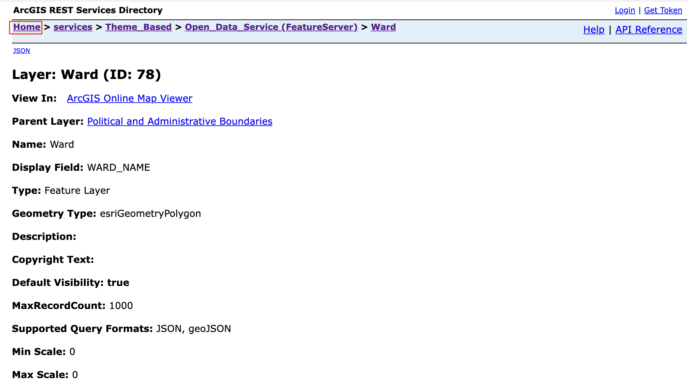
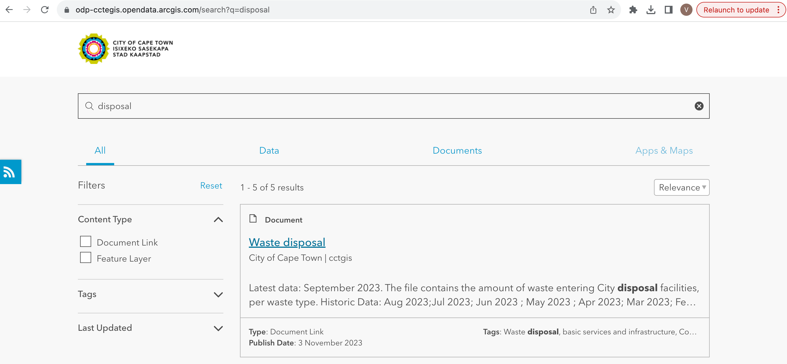
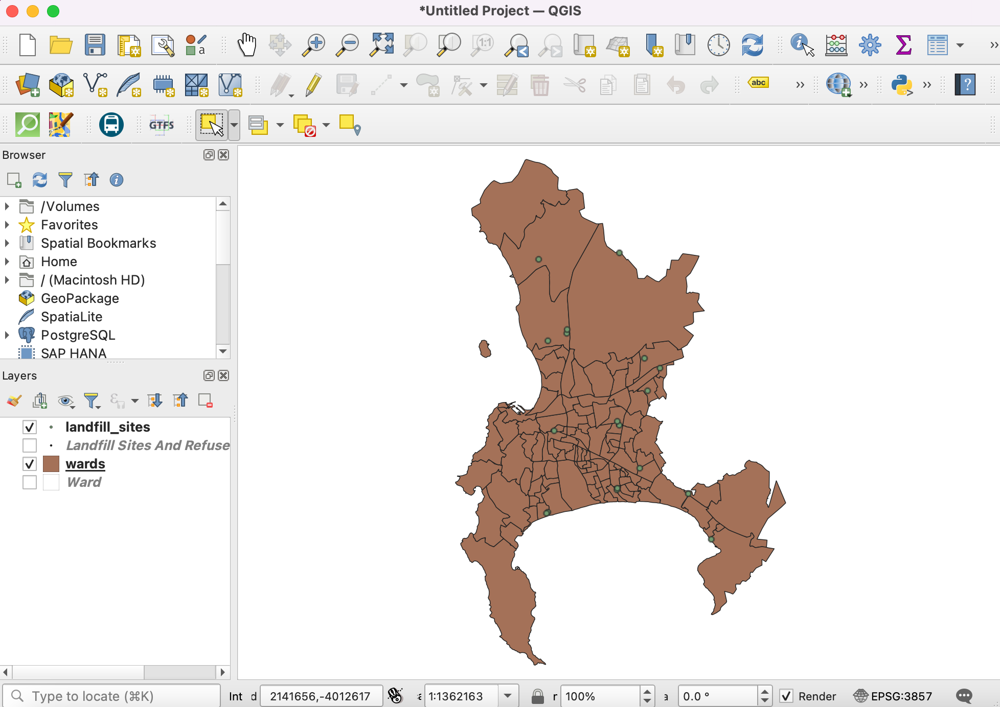
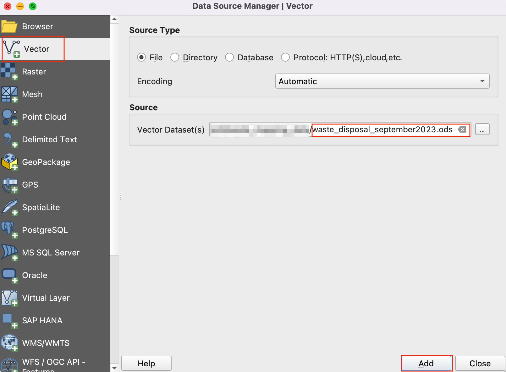

Ujaval Gandhi
Ujaval GandhiMapiranje količina odloženog otpada (QGIS3)¶
Ovaj tutorijal je osmišljen da vam pomogne da otkrijete nove tehnike mapiranja i kartografske alate dostupne u QGIS-u.
Pregled zadatka¶
Naučićete kako da prikupite tačkaste podatke o deponijama i kreirate mapu proporcionalno-simboličkih podataka koja prikazuje količinu otpada obrađenog na svakoj deponiji.
Druge veštine koje ćete naučiti¶
Uvoz podataka sa ArcGIS servera u QGIS koristeći REST URL.
Uvoz tabelarnih podataka iz proračunskih tabela u QGIS.
Dobijte podatke¶
Podatke za tutorijal možete pronaći na portalu otvorenih podataka Kejptauna - https://odp-cctegis.opendata.arcgis.com. Uvozićemo podatke sa portala koristeći ArcGIS Online REST servis i pripremićemo tri sloja pomenuta u nastavku.
Okružne jedinice: Poligonski shapefile sa granicama okružnih jedinica Kejptauna.
Deponije: Tačkasti shapefile sa trenutnim, zatvorenim i predloženim postrojenjima za preradu otpada u Kejptaunu.
Podaci o odlaganju otpada: Tabela sa količinom otpada koji ulazi u gradske objekte za odlaganje otpada.
Hajde da pogledamo korak po korak pripremu skupa podataka za ovaj tutorijal.
Idite na portal podataka - https://odp-cctegis.opendata.arcgis.com/search?tags=. Pretražićemo podatke „Wards“ u traci za pretragu i kliknuti da bismo dalje pregledali.

Kliknite na Prikaži sve detalje da biste istražili dostupne usluge za dobijanje podataka.

Pomerite se nadole da biste pronašli otvorenu opciju View Data Source i kliknite na nju.

U direktorijumu ArcGIS REST servisa, idite na Home i kopirajte URL adresu te stranice. Kopirana adresa izgleda ovako - https://citymaps.capetown.gov.za/agsext1/rest/services.
Sada otvorite QGIS i idite na .

Lista izvora podataka se vidi u levom panelu. Pomerite se nadole da biste pronašli . Kliknite na new da biste kreirali novu vezu sa serverom.

U Detalji veze, navedite Naziv
Portal otvorenih podataka Kejptaunai nalepite kopirani URL kao unos za URL.
Kliknite na OK, a zatim na Connect da biste videli fascikle sa podacima dostupne na serveru.

Sada ćemo pretražiti sva tri sloja potrebna za tutorijal iz baze podataka. Prvo, otvorićemo sloj „Wards“ u QGIS-u. Proširite fascikle da biste pregledali slojeve. Puna putanja do sloja je - . Izaberite sloj i kliknite Add.

Otvorimo
Deponijeu QGIS-u. Putanja do sloja je . Izaberite sloj i kliknite Dodaj.
Sada ćemo potražiti tabelu „Odlaganje otpada“ na portalu podataka. Kliknite na vezu sa podacima „Odlaganje otpada“ da biste preuzeli datoteku.
Datoteka pod nazivom „Waste Disposal September 2023.ods“ biće preuzeta nakon klika na link. Otvorite datoteku. Datoteka sadrži 3 tabele od kojih ćemo koristiti podatke „Disposal_per_Site“ za tutorijal.

Zadržaćemo samo ukupan broj odlaganja po lokaciji. Dodajte novi list pod nazivom „Odlaganje_po_lokaciji_uređeno“ i kopirajte podatke iz lista „Odlaganje_po_lokaciji“. Izmenite nazive lokacija uklanjanjem zagrada kako bi se podudarali sa atributima podataka „Deponije“. Vrednosti su formatirani brojevi, promenite ih u jednostavne decimale. Sačuvajte ga kao „waste_disposal_september2023.ods“ u fascikli sa podacima za ovaj tutorijal.

Primetite da postoje 3 različite lokacije za „Belvil“ i da je vrednost otpada nula za dve od njih. Hajde da to spojimo da bismo zadržali jedinu lokaciju „Belvil“ sa vrednošću „različitom od nule“.

Pređite na QGIS. Već smo uvezli shapefile-ove sa ArcGIS servera. Hajde da ih sačuvamo u lokalnoj fascikli sa podacima za ovaj tutorijal. Kliknite desnim tasterom miša na sloj „Deponije i stanice za pretovar otpada“. Idite na .

U dijalogu Sačuvaj vektorski sloj kao, idite do fascikle sa podacima i sačuvajte shapefile kao
landfill_sites.shp. Kliknite na U redu.
Slično tome, sačuvajte sloj „ward“ kao „wards.shp“ u folderu data. Sada smo pripremili folder data sa sva tri sloja i spremni smo da započnemo postupak.

Radi lakšeg snalaženja, možete direktno preuzeti kopiju ovih datoteka ispod:
Procedura¶
Otvorite QGIS. Kliknite na ikonu da biste dodali sloj.

Pređite na karticu Vector i idite do fascikle sa podacima i izaberite datoteke
wards.shpilandfill_sites.shp. Kliknite na Dodaj.
Otvorite tabelu atributa sloja „landfill_sites“. Ovaj sloj sadrži sva mesta za sakupljanje čvrstog otpada u Kejptaunu. Možete videti da atribut „STATUS“ sadrži da li su objekti operativni ili ne. Vrednosti u ovoj koloni možemo koristiti da izaberemo samo trenutne objekte.

Kliknite desnim tasterom miša na sloj
landfill_sitesi izaberite Filter.
5. In the Query Builder, enter the following expression and click OK.
"STATUS" = 'Current'

Kada se filter primeni, na mapi će biti vidljiv samo podskup tačaka. Zatim ćemo dodati datoteku „waste_disposal_september2023.ods“. Kliknite na ikonu i pređite na karticu Vektor. Krećite se kroz datoteku klikom na dugme … koje se nalazi pored Ime datoteke. Kliknite na Dodaj.
U dijalogu Izaberite stavke za dodavanje, izaberite stavku
Disposal_per_Site_editedi kliknite na Dodaj slojeve.
Otvorite tabelu atributa sloja „waste_disposal_september2023“. Ova tabela sadrži naziv postrojenja i ukupan otpad sakupljen na lokaciji za mesec septembar 2023. godine.

Spojimo ovu tabelu sa slojem tačaka „landfill_sites“. Idite na iz menija.

Potražite i pronađite alatku Spoji atribute po vrednosti polja iz alata. Dvaput kliknite da biste je otvorili.

11. In the Join Attributes by Field Value dialog, select landfill_sites as the Input layer and NAME as the Table field. Select waste_disposal_september2023 as the Input layer 2 and Disposal Site as the Table field 2.
Check the Discard records which could not be joined box. Save the Joined layer by clicking on … button and select Save to File.

Nazovite izlazni sloj kao
waste_by_station_september_2023.shpi kliknite na Pokreni.

Kada se obrada završi, biće dodat novi sloj „waste_by_station_september_2023“ koji će sadržati količinu otpada u koloni „Sept2023“.

Sada hajde da vizualizujemo ove podatke. Prvo izaberite sloj „Wards“ i kliknite na ikonu :menuselection:„Otvori panel za stilizovanje sloja“.

Postavite simbologiju ovog sloja na Jedan simbol sa svetlom bojom popunjavanja i bojom crtanja.

Zatim izaberite sloj „waste_by_station_september_2023“ i izaberite simbol Simple Marker. Kliknite na padajući meni za Symbol layer type.

Izaberite „Popunjeni marker“ kao Tip sloja simbola. Sada ćemo promeniti veličinu simbola proporcionalno količini otpada sakupljenog na lokaciji. Da bismo to uradili, moramo primeniti zamenu definisanu podacima - koja može primeniti vrednost polja ili izraz za izračunavanje veličine za svaku karakteristiku. Kliknite na dugme Zamena definisana podacima pored Veličina i izaberite Pomoćnik.

Želimo da veličinu popunjenih simbola podesimo na osnovu vrednosti sakupljenog otpada. Izaberite polje „Sept2023“ kao :guilabel:„Izvor“. Postavite vrednosti od
5000do50000. Sada podesite veličinu kruga od1do25. Kliknite na ikonu :guilabel:„Nazad“.

Videćete krugove različitih veličina za svaku tačku. Veličine su u milimetrima. Dugme za nadjačavanje definisano podacima će postati žuto, što ukazuje na to da je nadjačanje primenjeno za tu vrednost.

Hajde da istražimo naprednije opcije stilizovanja. Promenite tip sloja Symbol na Shapeburst Fill. Izaberite 2 boje po vašem izboru da biste prikazali krugove gradijentnim popunjavanjem.

21.Next we will apply a Drop-shadow effect to the circles to make them pop-out on the map. These are known as Live Layer Effects. Scroll down and expand the Layer Rendering section. Check the Draw effects button and click the star button.

Omogućite opciju Drop Shadow.
Mapa sada izgleda prilično dobro, ali čitalac treba da zna koje vrednosti ovi simboli predstavljaju. Bilo bi dobro imati legendu koja se može interpretirati. Kliknite na dugme Nazad dok se ne vratite u glavni dijalog za stilizovanje sloja. Izaberite Marker i kliknite na dugme Napredno na dnu. Izaberite Legenda veličine definisana podacima.

Unesite „Sakupljeni otpad (tone)“ kao Naslov i kliknite na dugme + da biste dodali unose legende. Pošto su naši simboli skalirani faktorom 3, unesite odgovarajuću vrednost i oznaku. Sada ćete videti lepu legendu u panelu Slojevi. Ista legenda će biti dostupna u „Izgledu za štampanje“ ako želite da kreirate mapu od ovih podataka.

Zatvorite panel Stilizovanje sloja. Vizuelizacija je spremna. Naučili ste kako da podatke u tabeli pretvorite u vizuelno informativnu i atraktivnu mapu.

If you want to give feedback or share your experience with this tutorial, please comment below. (requires GitHub account)